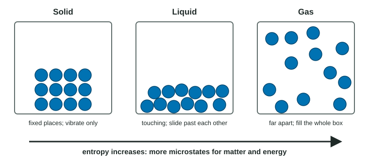

Unit 6 asked how much heat a process gives off or takes in. That is only half of what decides whether a process happens. Ice melts on a warm day even though melting absorbs heat, and a gas spreads into an empty flask with no heat change at all. The other half is entropy, and this page is about what it means at the level of particles.
Microstates: counting arrangements
Picture four gas atoms in a box with an imaginary line down the middle. Each atom can be on the left or on the right. There is exactly one way to have all four on the left. There are six different ways to have two on each side. If the atoms move at random, you will find them split two and two far more often than all on one side, simply because there are more ways to be split.
Each specific arrangement is called a microstate. A real sample has around 1023 particles, each with a position and an energy, so the number of microstates is astronomically large. The arrangement we observe is the one with by far the most microstates, because it is the one the particles almost always land in.
Entropy (symbol S) is a measure of the number of microstates available to a system: the number of ways its particles and its energy can be arranged. More ways means higher entropy.

Dispersal of matter
Entropy goes up when matter spreads out, because spread-out particles have more places to be. Look at Figure 1:
- Solid → liquid → gas. In a solid the particles vibrate in fixed positions. In a liquid they touch but slide past one another. In a gas they move freely through the whole container. Each step gives many more arrangements, so S(solid) < S(liquid) < S(gas) for the same substance.
- A gas expands. Double the volume and each particle has twice as many places to be.
- A solute dissolves. Particles leave a fixed crystal and spread through the solution.
- A reaction makes more moles of gas. More independent gas particles means more ways to arrange them.
Dispersal of energy
Particles also hold energy, as motion (and, in molecules, as rotation and vibration). At a higher temperature the particles have a wider range of speeds: the Maxwell-Boltzmann distribution you met in topic 3.5 gets lower and broader. With the energy spread over more speeds, there are more ways to share it out among the particles, so entropy increases with temperature.
The same idea explains why, at the same temperature, a gas made of molecules with many atoms (propane, C3H8) has more entropy than a gas of single atoms (argon). The bigger molecule can store energy by rotating and by vibrating along each of its bonds, which gives it more ways to hold the same energy.
Predicting the sign of ΔS
ΔS is the change in entropy of the system, S(final) − S(initial). Positive means entropy went up. To predict the sign:
- Count moles of gas on each side. Gas dominates entropy, so if the moles of gas go up, ΔS is positive; if they go down, ΔS is negative.
- If the moles of gas do not change, compare phases: making liquid or dissolved particles from a solid raises S.
- If the phases do not change, compare particle counts and temperature.
Worked example. Predict the sign of ΔS for 2 SO2(g) + O2(g) → 2 SO3(g), and justify it.
Moles of gas: 2 + 1 = 3 on the left, 2 on the right. The number of gas particles falls from 3 to 2 for every reaction as written.
Claim: ΔS is negative. Reasoning: with fewer independent gas particles, there are fewer ways to arrange the matter, so the number of microstates and the entropy fall.
Why "disorder" is not enough
You will often hear entropy called "disorder". It is a loose picture that can mislead: a glass of water with ice cubes looks "more disordered" than the same water after the ice melts, yet the melted water has more entropy. Exam readers do not give credit for "the system becomes more disordered". They want the particle-level reason: matter spreads into more volume or into a freer phase, or energy spreads over a wider range of speeds, so there are more microstates.
| Process | Weak (no credit) | Strong |
|---|---|---|
| Water boils | "The gas is more disordered." | "Gas molecules move freely through the whole container instead of staying in contact, so there are many more possible arrangements; ΔS > 0." |
| N2(g) + 3 H2(g) → 2 NH3(g) | "Things combine, so it is more ordered." | "4 mol of gas become 2 mol, so there are fewer gas particles to arrange; ΔS < 0." |
Competing effects
Sometimes two effects pull in opposite directions. When a salt dissolves, its ions spread out (entropy up), but water molecules are held in place around each ion by ion-dipole attractions (entropy down). For most salts, such as NaCl, the spreading of the ions wins. For small, highly charged ions the ordering of the water can win, which you will meet in topic 9.6. When you face a case like this, name both effects and say which one is larger.